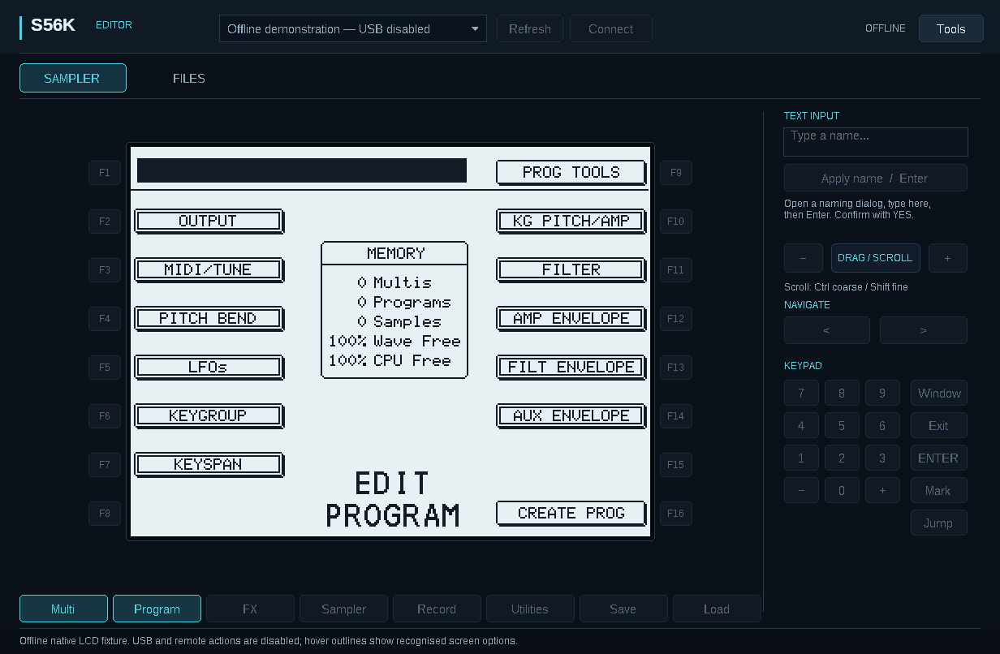
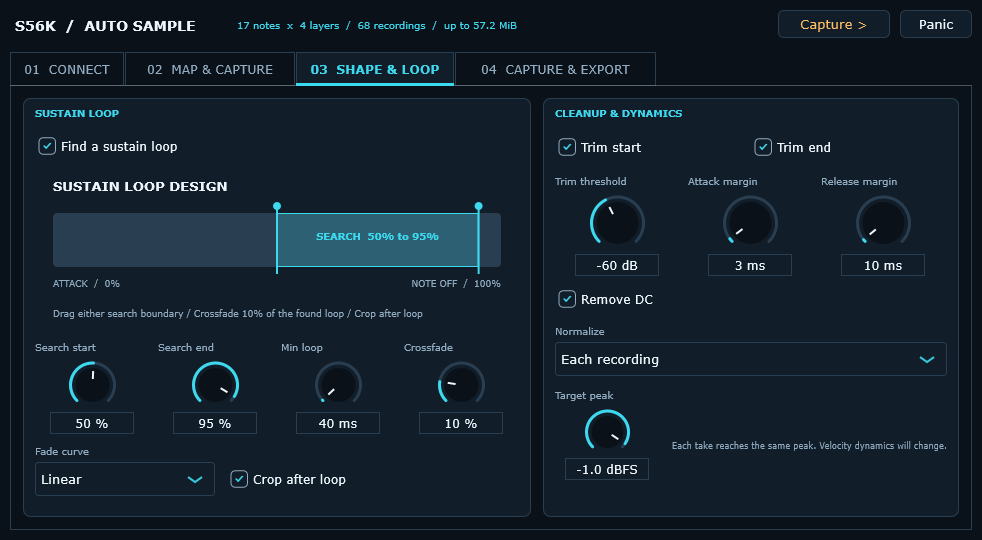
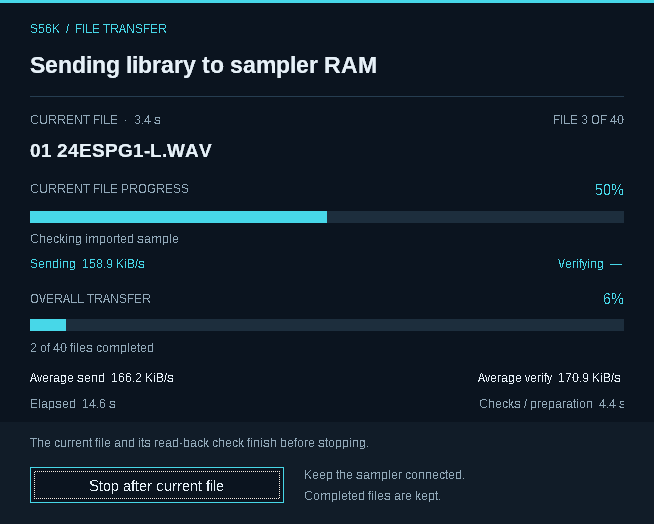
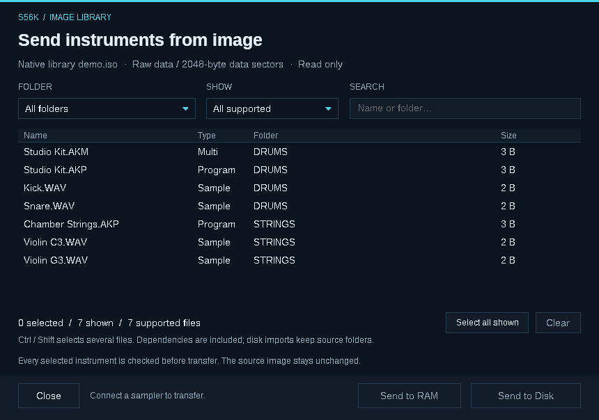
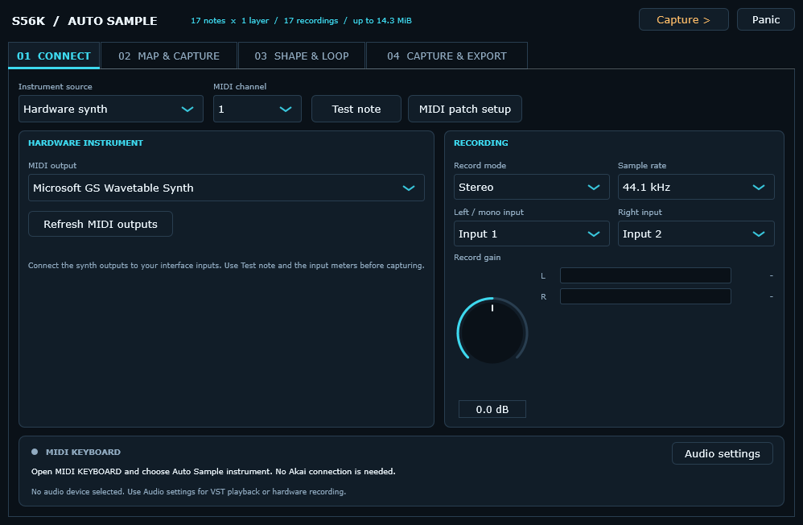
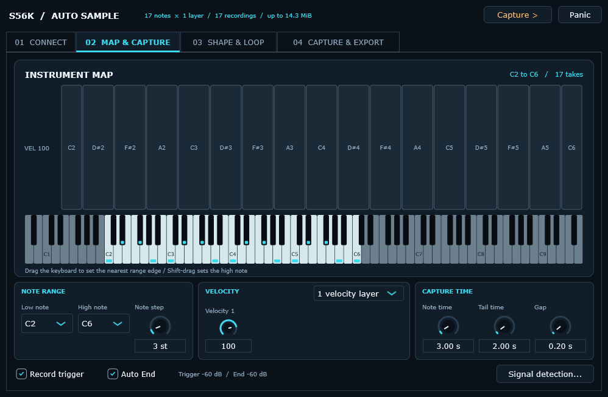
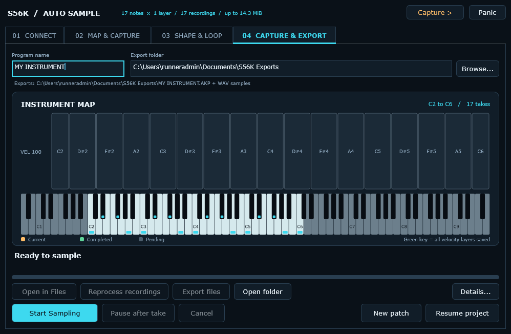
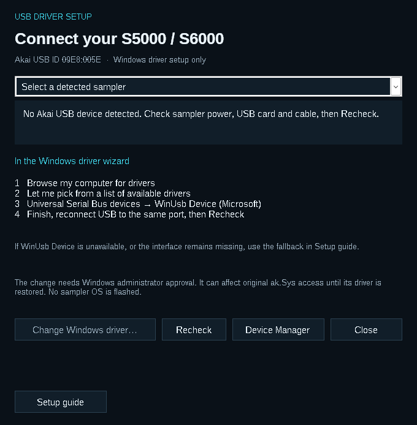

0.12.8 Auto Sample Preview · Windows 11 · Intel/AMD x64 · AKAI S5000 / S6000
Bring your sampler's controls, instruments, disk libraries and computer-side Auto Sample into one desktop workspace. Play from a MIDI keyboard, capture hardware or VST3 instruments, and create native AKP/WAV files. Auto Sample and its instrument keyboard route work without a connected sampler.
Remote control and transfers use the sampler's IB-S56USB expansion card with Microsoft WinUSB. The Editor works with stock OS 2.14 and S56K Expanded Edition; installing it does not require a firmware update.
Download the Windows ZIP from Releases and extract all files into a new folder. Keep the internal folder and the other supporting files beside the app.
Open S56K-Editor.exe. This is the only application you need to launch.
To control or transfer to a sampler, turn it on, connect its USB card, select it and choose Connect. Close ak.Sys, the Firmware Updater and any other app using that sampler first. If Windows has not assigned a suitable driver, follow Tools → USB driver setup… and the USB setup guide.
To capture a hardware synth or VST3 instrument on the PC, open AUTO SAMPLE. The sampler can be connected later when you want to transfer the exported files.
The release is unsigned. Check that your download came from the project release page and matches its supplied checksum. Do not disable Windows security or driver-signature enforcement.
Area
Use it for
SAMPLER
Control the connected sampler and see its live LCD.
FILES
Manage computer files, sampler RAM/disks and supported Akai disk images.
AUTO SAMPLE
Record a hardware synth or hosted VST3, process its sound and export an AKP with WAVs.
MIDI KEYBOARD
Route a computer-connected keyboard to the Akai or to Auto Sample's selected instrument.
Local browsing, VST3 playing and Auto Sample do not require an Akai USB connection. USB carries sampler control and file data; it does not turn the sampler into a computer audio interface.
Your sampler, on screen

Sampler workspace with an example program screen
Click a recognised option on the LCD, or use the F buttons beside it. The bottom mode buttons follow the current sampler page:
Multi · Program · FX · Sampler · Record · Utilities · Save · Load
Changes made on the front panel appear in the Editor too. The LCD updates automatically while the connected Sampler page is visible and idle; transfers and dialogs temporarily pause it. There is no Live switch to turn on.
Action
How
Change a value
Scroll over the LCD or drag/scroll the DATA control.
Fine or coarse adjustment
Hold Shift for fine changes or Ctrl for coarse changes.
Enter a name
Open a naming dialog, type in TEXT INPUT, then press Enter or Apply name / Enter. Confirm with YES on the sampler screen.
Save a screenshot
Tools → Save LCD image… saves the latest received LCD as a BMP.
Use panel shortcuts
F1–F12; Shift+F1–F8 for F9–F16; digits, arrows, +/−, Enter and Escape.
Names use up to 20 supported printable characters. Applying a name is enabled only for recognised naming dialogs. Text entry replaces the whole name; you still confirm the result yourself.
The LCD keeps the sampler's native resolution. Clicking the display works for recognised soft-key areas rather than turning every pixel into a new control. The Editor does not expose Undo or user-key buttons in this preview.
Play from a MIDI keyboard
Open MIDI KEYBOARD, select the keyboard's Windows MIDI input and choose a destination:
Destination
What you need
Akai sampler - USB
Connect the sampler, choose its logical input A or B and the MIDI channel. Hear sound from the sampler's audio outputs.
Auto Sample instrument - external synth / VST3
In AUTO SAMPLE → CONNECT, choose the synth's computer MIDI output or load a VST3 instrument and select an audio output. The sampler need not be connected.
Click Connect once and wait for Connecting... to change to the ready status. Disconnect stops forwarding. Closing the keyboard window leaves the route active; reopening it remembers the selected device. Use Panic to release held notes. If a remembered device is unavailable, choose a connected input explicitly.
Notes, velocity, sustain, pitch bend and supported controllers follow the selected route. Live keyboard playing and Auto Sample's capture/test-note channel are separate settings. For a hardware synth, monitor its outputs directly or through your audio interface; the Editor does not enable input monitoring.
The sampler LCD continues updating while its keyboard route is enabled, and ordinary parameter changes do not automatically send all-notes-off. Dense MIDI traffic can slow screen updates. File transfers release held notes and pause the Akai route until the operation ends. Auto Sample pauses its own keyboard route while capturing, testing a note or reconfiguring the instrument. Play fresh notes when the route is ready again; delayed notes are discarded.
A capture in progress, with current and completed notes on the instrument map
Auto Sample is integrated into the Editor. It records selected notes at up to four velocity layers, processes the recordings, and writes a native S5000/S6000 AKP program plus WAV samples directly into your chosen export folder.
Page
Set up
01 CONNECT
Hardware MIDI/audio connections or a 64-bit VST3 instrument, ASIO or Windows audio, and a test note.
02 MAP & CAPTURE
Low/high note, note step, velocity layers, note/tail/gap times and signal detection.
03 SHAPE & LOOP
Trimming, DC removal, normalization, sustain-loop search, crossfade and crop-after-loop.
04 CAPTURE & EXPORT
Program name and export folder, Start Sampling, progress, saved-take review and export.
For hardware, connect the PC's MIDI output to the synth and its audio outputs to your interface inputs. For VST3, load the instrument and select its sound. Accelerated rendering can run supported instruments faster than real time; turn it off when a plugin needs paced processing. No instrument plugins or audio-interface drivers are bundled.
During capture, the current take is amber, completed takes are green and pending takes are subdued. Elapsed time and an adaptive estimate show progress. Loop search uses a percentage window inside the held note. SHAPE & LOOP displays a setup diagram; the actual recorded waveform appears for review after the run stops or finishes.

Loop search, crossfade and processing controls
Start Sampling always begins a new run. The Editor remembers your settings and identifies a previous export when reopened. New Patch clears the name and review while retaining your instrument, device, mapping and processing choices. Resume project continues retained incomplete recordings; Reprocess recordings applies new processing to retained originals without recording the synth again.
Your export folder receives only the AKP and referenced WAVs. Working recordings and recovery information stay separately under %LOCALAPPDATA%\S56K\Editor\AutoSampleWork. Completed working data is cleaned up on normal close only after its export and working files verify. Enable Details… → Keep working recordings after closing before closing if you want to reprocess later. Incomplete or failed work is retained for Resume.
Wait for export verification, then choose Open in Files, select the AKP with Dependencies: ON, and send it to sampler RAM or disk. Existing different export files require replacement approval; Export files can retry to another folder without recording again.
The COMPUTER pane is on the left. Use Open file or Folder…, search by filename, and double-click a file to inspect it. On the right, choose the sampler's RAM or DISKS.
Destination
What happens
What happens next
Send to RAM →
Loads samples, programs and Multis into working memory, ready to play.
Audition the sound, then save it to disk when you want to keep it.
Send to Disk →
Writes files to the selected sampler disk folder.
Load the saved instrument into RAM when you want to play it.
Sending to RAM is not a disk backup. Sending to disk does not load the library into RAM. Unsaved RAM contents are lost when the sampler is switched off.
Send a program, Multi or batch
Open the PC folder containing the AKP programs, AKM Multis and their WAV samples. Keep their associated files together.
Turn on Programs / Multis to hide individual samples. Select instruments with Ctrl/Shift-click, Select all, or Ctrl+A.
Leave Dependencies: ON to include the associated files. Choose Send to RAM →, or browse a writable sampler disk folder and choose Send to Disk →.
Read the transfer review, including conversion notices and renamed files. Choose Start transfer.
Audition the result. If it was sent to RAM, saving remains a separate action.
The filter hides sample rows; it does not remove samples needed by a selected instrument. AKP and AKM files contain settings and references—the audio lives in separate WAV files.
With dependencies on, the Editor prepares the batch before uploading. Shared matching files within that batch are sent once. Different files needing the same destination name receive unique names where the references can be resolved safely. Missing or genuinely ambiguous dependencies stop preparation.
Existing RAM sounds are protected. A source-file conflict with an existing RAM name can stop a transfer. With Dependencies: OFF, references may reuse sounds already in RAM by name; their contents are not compared. Use this option only when those sounds are already the correct ones.
Progress, verification and stopping

Transfer window with current-file and overall progress
The transfer window shows current-file progress, overall progress, and the current stage. Sending and read-back verification have separate speed measurements; preparation is additional work. Rates are useful data in KiB/s, not the USB link's advertised signalling speed.
Tools → Verify uploads by reading back is on by default. Turning it off skips the full return transfer and comparison, reducing the time spent verifying. Source validation and sampler acceptance checks remain, but uploaded contents are not independently compared with a returned copy. The choice is remembered; set it before starting a job.
Stop after current file completes the active file and its enabled verification before stopping. Completed files remain in their destination. It is not an undo operation, and there is no automatic resume or rollback.
Retrieve an instrument
Select a sound in sampler RAM, enable Dependencies: ON, and choose ← Retrieve file. Select a new PC folder. The Editor retrieves the instrument and its associated files as separate WAV/AKP/AKM files; it refuses existing destination files.
Keep the sampler idle during retrieval. This is a sequence of reads, not a single instant snapshot. Keep the resulting files together.
Open your Akai disk-image library

Image library browser with volume and instrument filters
Below the local file controls, AKAI S1000 / S3000 DISK IMAGES contains:
Open image — choose a new ISO, NRG, BIN, CUE or IMG library.
Browse image — return to the image already open.
The file picker remembers the last image folder, including after cancellation or an app restart. Computer files and save destinations have separate remembered locations.
Choose Open image. If a BIN has a CUE sheet, keep both files together and open the CUE.
Select a volume or folder, filter by type, and search for instruments. Use Ctrl/Shift-click or Select all shown. Selection is retained when filters change; Clear removes all selections.
Choose Send to RAM or Send to Disk. Image instruments include their dependencies automatically.
Read Image notices and the transfer review before starting. A readable catalogue can still contain files or dependencies that cannot be imported.
For image-to-disk transfers, first select the destination in the main DISKS pane, then return through Browse image. The Editor creates an Import YYYYMMDD-HHMMSS folder with subfolders for source volumes. This route does not require the entire library to fit in sample RAM.
The source image is read-only. Conversion happens on the PC as files are prepared; current transfers do not extract a prepared library into AppData. Keep the source files unchanged during the job. See supported formats and limits for container and conversion details.
Work with the sampler's disks
Choose DISKS, select a volume and open a folder. Up, Root and Refresh navigate or reread that location. This browser is independent of the sampler's current front-panel disk selection.
Action
Use it for
Create folder
Create the name entered in NEW FOLDER NAME on a writable disk.
Send to Disk →
Copy selected PC files or an instrument batch into the chosen destination.
← Retrieve file
Copy one selected sampler-disk file to a new PC filename.
Load to RAM
Ask the sampler to load the selected WAV, AKP or AKM, with dependencies when enabled.
Save to disk… / Save RAM here
Select a RAM object, choose Save to disk, navigate to the destination and confirm Save RAM here.
Saving an instrument with dependencies needs an empty folder. Create a new folder first. Existing destination files are not silently overwritten. Read-only media can be browsed and retrieved.
A stopped or failed disk operation can leave completed files, partial files or new folders. Inspect the destination before retrying. Free-space estimates cannot account for every allocation or media condition.
Waveform inspection on the PC
Open a WAV to inspect its waveform and duration. PC Play uses the computer's audio output. Set the selection start/end and optional Normalise, then choose Export WAV copy to create an edited PCM16 copy.
When editing a supported native Akai WAV, full-range export and normalization preserve its tuning, playback mode, sample bounds and supported loop settings. Trimming moves retained sample bounds and loops to match the new audio. If a trim cuts through a loop, the Editor removes that loop and switches off looped playback; review the warning before saving. A retained loop needs the sampler's required audio after its end. Unsupported native metadata or a trim leaving no playable region is refused.
The original WAV stays unchanged. Preview plays the source audio; it does not apply pending edits or emulate the sampler's tuning, sample bounds and playback modes. Check the edited copy on the sampler before replacing library files.
Send to RAM sends the whole selected WAV. To upload your waveform edit, select the exported copy. USB does not turn the sampler into an audio interface.
Tools, explained
Command
Purpose
USB driver setup…
Inspect the Akai device's Windows driver while disconnected, with an option to open its Windows driver wizard.
Save troubleshooting log…
Save this session's connection, error and transfer details to a local text file. It can include filenames and paths, but no sample audio. Review it before sharing. Nothing is uploaded automatically.
Save LCD image…
Save the most recently received sampler screen as a BMP.
Verify uploads by reading back
Enable or disable full returned-content comparisons for uploads.
Review legacy import folders…
Appears only if early Editor versions left an import folder. Opens it in Explorer so you can review it yourself. Nothing is deleted automatically.
Try a small instrument first and listen to its pitch, stereo image, release and loops. Keep a backup of your work, read any conversion notices, and check available RAM or disk space. This preview does not promise compatibility with every library or hardware configuration.
Capture a hardware synth or a VST3 instrument on your computer, then export a
playable S5000/S6000 program. Start with a few notes and check the result on
your sampler before recording a large instrument.
Auto Sample records a hardware or VST3 instrument at selected notes and
velocities, processes the recordings and creates a program for the AKAI S5000
and S6000. Choose an Export folder for the AKP program and its WAV samples.
Those native files appear directly in that folder, ready to copy or transfer;
Auto Sample adds no project settings, raw recordings or nested Export folder.
Working recordings are stored separately on the computer. The sampler can be
connected later for transfer.
AUTO SAMPLE is a workspace inside the Editor, alongside SAMPLER and
FILES. Switching workspaces keeps the project and recordings in place.
Start S56K-Editor.exe; there is no second application to launch. Extract the
complete ZIP and keep its supporting files together, including the internal
folder. Only S56K-Editor.exe needs to be launched.
The four main pages use compact controls without a scrolling form. Turn a knob
or enter an exact value in its field. Audio configuration, MIDI patch setup,
signal detection and the capture log open in separate dialogs. The recording
controls appear only on 04 CAPTURE & EXPORT.
What connects where
Task
Connection
Play the sampler from a keyboard connected to the PC
Keyboard MIDI input → Editor → sampler USB. Hear sound from the sampler's audio outputs.
Play an external synth without the sampler
Keyboard MIDI input → Editor → Auto Sample's selected computer MIDI output → synth. Hear sound from the synth or your interface's direct monitor.
Instrument runs on the PC inside Auto Sample. Rendering does not pass through the sampler or its audio outputs.
Test a completed AKP
Editor Files → transfer AKP plus its WAV dependencies to sampler RAM or disk.
The sampler's USB connection does not provide audio capture. Connecting a synth
by MIDI alone cannot record its sound.
Play from a MIDI keyboard
MIDI KEYBOARD works whether or not an Akai sampler is connected. Select the
keyboard's Windows MIDI input, choose its destination and click Connect:
Destination
Setup and sound output
Akai sampler - USB
Connect the S5000/S6000, select logical input A or B and the intended MIDI channel. Sound comes from the sampler's audio outputs.
Auto Sample instrument - external synth / VST3
On AUTO SAMPLE → CONNECT, choose Hardware and its MIDI output, or choose VST3 and load an instrument. This route does not require an Akai connection.
For a hardware synth, connect a computer MIDI output to the synth's MIDI input.
Select the receiving channel in MIDI KEYBOARD; this is the channel used for
live playing. Auto Sample's own MIDI channel separately controls its test notes
and automatic capture. Hear the synth through its outputs or your interface's
direct-monitor facility. The Editor does not enable audio input monitoring.
For a VST3 instrument, choose the interface and output in CONNECT → Audio settings,
then open MIDI KEYBOARD, choose Auto Sample instrument and click Connect.
The loaded instrument plays live through that output. It does not require a
capture project, a Test Note run or an Akai sampler to make sound.
The first Connect starts the instrument helper when needed and waits for
the route to become ready. The status shows Connecting... during startup.
Use Disconnect to stop keyboard input.
Notes, velocity, pitch bend and supported expressive controls follow the chosen
route. Use Panic if a note remains sounding. Closing the routing window keeps
input enabled; Disconnect disables it. Reopening MIDI KEYBOARD shows the
selected input and routing settings. If a previously selected keyboard is
unavailable, choose a connected input explicitly. Changing destinations releases
held notes on the old destination before enabling the new one.
Manual keyboard playing pauses while Auto Sample records, runs a Test Note or
changes its instrument/audio configuration. Notes received during that pause
are discarded so they cannot enter an automatic recording or sound later as a
burst. Play fresh notes when the instrument is ready again. A keyboard routed
to Auto Sample remains independent of the Akai USB connection.
Playing the Akai while editing
Automatic LCD updates continue while keyboard input is enabled. Keyboard events
have priority: screen requests can briefly wait for a gap in MIDI activity.
Reading the display does not release held notes. Very dense controller traffic
can reduce the display update rate; enabling input alone does not freeze it.
Remote buttons, the DATA wheel and text entry no longer send an automatic
all-notes-off command. You can adjust parameters while playing. The sampler
still processes USB requests in sequence, so very busy control or MIDI input can
affect responsiveness. A parameter change may itself alter the sound.
File transfers and other longer USB tasks release held notes and pause the
Akai sampler keyboard route for the complete operation, including gaps
between batch files. Delayed notes are discarded; play a new note after the task
to continue. Auto Sample's computer-side instrument route is separate. The
Editor does not create a Windows virtual MIDI port for other programs.
Start with a small instrument
Select the AUTO SAMPLE workspace in the Editor.
On 01 CONNECT, choose Hardware or VST3 and test one note.
On 02 MAP & CAPTURE, choose a small range, one velocity layer and short
durations. Use the piano keyboard or the Low note / High note fields.
On 03 SHAPE & LOOP, initially leave looping and normalization off. Enable
trimming if the source has latency or a long silent release.
On 04 CAPTURE & EXPORT, choose an Export folder, enter a program
name, then start. The completed AKP and WAVs go directly into that folder.
Review the waveform and any warnings. Transfer the exported AKP with its WAV
dependencies to the sampler and play it before sampling a larger range.
For a first test, a few adjacent notes at velocity 100 give a useful check of
tuning, level, note length and stereo routing without creating a large library.
01 CONNECT

Connect a hardware instrument, select audio and MIDI devices, and test its sound
Choose Hardware or VST3 as the source. The page groups instrument and
recording controls, showing the settings relevant to that source. Test-note
controls and a level meter let you check the sound. The connection strip shows
the current MIDI-keyboard route and audio device.
Click Test note to play the test; the same button becomes Stop note so
you can end it immediately. It returns to Test note when the test finishes.
For Hardware, open Audio settings, select the audio interface and enable the
input channel or pair carrying the synth. Choose the MIDI output connected to
the synth and the channel the synth receives. MIDI patch setup holds optional
Bank MSB/LSB, Program Change and controller messages for selecting the patch and
its initial controls. Use
the test note and level meter to set a useful recording level without clipping.
Stereo needs two source audio outputs and two selected interface inputs.
Choose the audio driver
The Audio settings dialog supports ASIO as well as Windows audio.
Install your interface manufacturer's 64-bit Windows ASIO driver first,
then select ASIO as the audio device type and select that interface. Enable
the input channels needed for hardware capture and the outputs used for VST3
playing and take review. ASIO commonly uses one interface for both input and
output; choose the channels on that device.
Start with a buffer of 256 or 512 samples and a supported sample rate.
Use the driver's control panel if it manages buffer size itself. A smaller
buffer reduces playing latency but gives the computer less time to process
complex instruments. If playback crackles or drops out, increase the buffer,
check the instrument's CPU/disk demands and close other applications using the
interface. ASIO support does not guarantee dropout-free operation on every
computer, driver or plugin. No interface driver is bundled with the Editor.
VST3 Test note follows the selected interface rate, including 96 kHz.
Auto Sample exports remain at 44.1 or 48 kHz; auditioning at a different
rate does not change the exported format.
Windows audio remains available when an ASIO driver is not installed. The
selected driver affects live VST3 playback, take review and hardware recording.
Accelerated VST3 rendering runs independently of physical audio timing; changing
to ASIO does not itself make offline rendering faster.
Record gain adjusts the incoming signal digitally from −24 to +24 dB. Set the
interface's physical input/preamp level first: reducing software gain cannot
repair clipping that has already happened at the input converter.
For VST3, choose a 64-bit instrument and open its editor to select a sound.
Set the sound before starting capture; its state is stored with the working project. Accelerated rendering asks
the instrument to render without waiting for real time. Disable it for a plugin
that needs paced processing. A five-second hardware note always needs physical
time to play; offline plugin rendering may be faster, depending on the plugin
and the computer.
A plugin can have its own latency, disk loading, random variation, copy
protection or external dependencies. Auto Sample does not guarantee identical
results across every instrument. An internal helper isolates audio and plugin
processing from the Editor's USB connection while the workspace remains inside
the same Editor window. A plugin failure can still interrupt the current take;
completed recordings remain in the local working session for Resume.
02 MAP & CAPTURE

Note range, velocity layers and recording times beneath the instrument map
The INSTRUMENT MAP displays the planned notes across velocity rows. Its
piano keyboard highlights the selected range and marks the notes that will be
recorded. Drag on the keyboard to move the nearest range edge; Shift-drag
sets the high note. The Low note and High note fields update with the graphic,
and remain available for precise choices. This keyboard edits the capture
range; it does not audition notes.
During a run, the current note and velocity are highlighted in amber. Saved
takes turn green and pending takes remain subdued. Each velocity layer has its
own row; a keyboard note becomes green once all its planned layers are saved.
Low note, High note and Note step define the pitch grid. Note names
use C4 = MIDI note 60. Some instruments label the same MIDI note C3; match
the pitch rather than the octave text if your synth uses another convention.
Samples fill the selected keyboard range using boundaries halfway between
recorded notes. Native program keygroups are limited to A0 (MIDI 21) through
G9 (MIDI 127) by the sampler's program loader.
Choose one to four velocity layers with increasing MIDI velocity values.
Each note is recorded at each selected velocity. The resulting AKP uses up to
four velocity zones per keygroup and up to 99 keygroups. A finer pitch grid or
more layers increases both recording time and sample memory. Only the active
velocity-layer controls are shown.
The enlarged map fills the main area. Pitch, velocity and timing knobs sit
below it; there is no separate capture timeline to drag. Use Note time,
Tail time and Gap to set the individual durations directly. These are
maximum times, so Auto End may finish a recording before those limits.
Use Signal detection for trigger/end thresholds, timeouts and the early-end
rule. These detailed controls have their own dialog; the note range and timing
stay visible on the main page.
Control
Meaning
Note time
How long the MIDI note is held, measured from Note On.
Tail time
Maximum audio recorded after Note Off, for the release and effects.
Gap
Extra settling time between recordings.
Trigger level
Level used to identify the beginning of audible signal.
Signal timeout
Maximum wait for a usable signal before reporting a failed capture.
Auto End
End a recording after audio remains below the end level for the selected silence hold.
End level
Level considered silent for automatic ending.
Silence hold
How long the level must stay below the end level; a short dip should not end a useful sound.
Minimum take
Minimum time after detected onset before Auto End can finish a recording.
Also finish decaying notes before Note Time
Allow a naturally decaying sound to finish before the full note duration.
Trigger waiting does not postpone Note Off. Set note time long enough for a slow
attack to develop. A threshold too high can miss quiet layers; one below a noisy
hardware input's noise floor may never see silence. Begin with a short test,
watch the meter and adjust both trigger and end settings for the instrument.
With Auto End enabled, tail time is a maximum. A ten-second tail can finish
earlier once the silence rule is satisfied. A sustained sound can use its full
note time and still have its release recorded after Note Off.
03 SHAPE & LOOP
Sustain-loop search region, crossfade and processing controls
SUSTAIN LOOP DESIGN shows the search window within the held note: 0% is
the start and 100% is Note Off. Enable Auto Loop, then drag either search
boundary or use Search start and Search end below. This is a
setup diagram, not a waveform. The recorded waveform is shown on CAPTURE &
EXPORT after real audio is available. Changing the setup diagram does not
alter an existing recording until you reprocess it.
Trim start/end removes audio outside the chosen signal threshold while
retaining the selected start and end margins. A few milliseconds before the
detected attack can protect soft transients. Remove DC recentres a waveform
with a constant offset.
Leave normalization off to keep the recorded levels unchanged. Whole
project normalization applies one gain to every capture and preserves their
relative dynamics. Each recording normalization makes every recording reach
the target peak and therefore changes the relative levels of notes and velocity
layers. Normalization cannot repair
clipping that already occurred at the synth or audio interface.
Loop search runs inside the held-note portion. The start/end percentages
identify the region in which to find a sustained loop; they are not percentages
of the release tail. Start with a stable sound and a window such as 50–95%.
Crossfade blends the loop boundary; its percentage is based on the resulting
loop length. Linear and equal-power curves suit different material, and a long
crossfade can change the sound.
Loop search also checks fallback candidates for sparse periodic waveforms
whose useful boundaries can fall between its initial search positions. Always
listen to the result before exporting a full instrument.
Crop after loop removes release material after the selected loop. A small
guard area is still written for the sampler's interpolation requirements. This
is not a second audible release. Stereo channels share loop points and remain
aligned. Always audition the result: automatic loop matching cannot guarantee a
natural loop for evolving, random or strongly modulated sounds.
04 CAPTURE & EXPORT
Capture progress on the note and velocity map, with elapsed time and estimated time left
This is the recording page. Choose an Export folder, enter the program name
and start sampling here. During the run, a large keyboard and velocity map
replaces waveform review:
Amber / outlined: the take currently being recorded or processed.
Green: a completed, saved take.
Muted: a take still waiting to be recorded.
The display identifies the current phase, note and velocity layer, with saved
recording totals and percentage. Elapsed shows the duration of this run.
Estimated remaining adapts to measured capture speed, including accelerated
VST3 rendering and early endings. It shows Estimating until a take has
provided a useful measurement. This is an estimate, so changing note lengths or
processing costs can make it move up or down.
A resumed run counts previously saved takes correctly and times the new attempt;
it does not count time spent paused or with the application closed. Once all
recordings are saved, the display shows export/finalization separately instead
of promising an exact finish time. The map stays visible through that stage.
Waveform review returns after the run stops or finishes, so you can inspect and
listen to the actual files. Details… opens the capture notices and log.
Export the native files

Capture and export page with the program name, destination and Start Sampling button
The chosen folder receives <program>.AKP and its referenced .WAV samples
directly. Open folder opens this destination; Open in Files opens the
export for transfer in the Editor. The page shows the destination AKP path.
If matching filenames already contain different data, capture still finishes
and the Editor asks Replace existing export files?. Choose Replace existing
files to approve replacing those AKP/WAV files, or Keep existing, choose
another Export folder and click Export files. This retries publication from
the completed recordings without recording the instrument again. Identical
files are accepted, and unrelated files in the destination are preserved.
Cancellation or a failed publication rolls back newly written or replaced
files. The completed recordings remain available for another export attempt.
To retain two versions of the same patch, choose separate export folders.
Record another patch
Every new capture gets a separate local working session. The Export folder
can stay the same while you record differently named patches.
Start Sampling records the current plan into a new working session. Its label stays the same after a completed run and after reopening the Editor. Settings and the previous export are remembered across launches; a previous export is identified on page 4. Use New Patch for a fresh name and review.
Existing exports remain until you explicitly approve replacing them.
New Patch clears the program name and current review, keeping the loaded
instrument, audio/MIDI devices, mapping and processing settings. Select the
next sound, enter its name and start another run without closing the Editor.
The currently loaded VST3 sound is retained; New Patch does not reload an old
preset.
Resume project opens retained working recordings and completes missing
notes/layers using its saved configuration. Use this to continue an incomplete
run, rather than starting another project.
Reprocess recordings processes the current project's retained recordings
into a new revision. It does not record the instrument again.
Keep recordings for later reprocessing
On Windows, local working sessions live under
%LOCALAPPDATA%\S56K\Editor\AutoSampleWork. They hold the original floating-point
recordings, processed masters, saved settings, plugin state when applicable and
recovery information. Resume project starts its folder chooser there.
By default, completed working recordings are eligible for cleanup when the
Editor closes normally. Cleanup happens only after the export files and the
complete working inventory have been verified. It removes the managed working
data; the AKP and WAVs in your Export folder stay in place. A missing or changed
export or an unverified working file prevents that cleanup.
Before closing, enable Details… → Keep working recordings after closing if
you want to reprocess these recordings in a future session. With that option
off, perform any desired reprocessing before closing. Incomplete, cancelled
and failed sessions are retained for Resume.
To adjust trimming, looping or normalization after recording, change the
processing controls and use Reprocess recordings. The application uses the
retained originals and writes a new working revision. Choose another Export
folder to keep the earlier export for comparison, or approve replacement when
prompted. Reprocessing keeps the original note grid, velocity layers, sample
rate and channel count; changing
those requires a new recording project.
The saved-recording selector lets you compare Original recording,
Processed master and Export WAV. Choose a take to inspect its waveform
and loop markers, then use Listen and Stop to audition through the
computer's selected audio output. Audition loop appears and is enabled only
when the selected audio has valid loop markers. It plays the attack and then
repeats the saved sustain loop; switch it off for a single pass. The toggle takes
effect during playback and only changes the preview. To create or change a
loop, adjust SHAPE & LOOP and use Reprocess recordings. The sampler's
keygroup envelope still needs a playback check on the instrument. Refresh
rereads the current project's
saved recordings.
Keep an exported AKP together with its referenced WAVs when moving or backing
it up. Do not edit working files during a run. Resume verifies settings
and existing recordings; a changed or missing capture is reported.
Pause after take finishes the current recording before stopping. Cancel
discards the unfinished current take. Both keep recordings already completed.
The AKP is exported after the complete planned grid is present. If capture stops
partway through, resume the project to complete the missing notes/layers. A
silent or failed recording does not create a placeholder sample in the program.
Transfer to the sampler
After sampling and export verification finish, use Open in Files to switch to FILES, or select FILES
and open your chosen Export folder.
Select the AKP and include its dependencies, then use Send to RAM or
Send to Disk as appropriate. The WAVs contain the actual sound; the AKP
contains the keygroups, velocity zones and references to those samples.
Send to RAM makes the instrument available for testing. Use the sampler's
normal Save workflow if you want to retain it on its disk. Send to Disk
writes files to the chosen sampler disk location; load the program from there
when you want to play it. The sampler's available memory still limits how much
audio can be loaded at once, even when the project is large on the computer.
For the first test of this feature, leave read-back verification enabled and
check root pitches, transitions between sampled notes, every velocity layer,
stereo channels and any loops. Those listening checks complement file
validation; they establish how the new program behaves on your sampler.
The Editor requires an IB-S56USB card in the S5000 or S6000 and Microsoft WinUSB assigned to that device in Windows. Installing ak.Sys is not required.
If your sampler already connects
Keep the working driver. Close ak.Sys, the Firmware Updater and any other USB utility before connecting in the Editor. Only one application should use the sampler at a time.
If Windows chose the wrong driver
Open Tools → USB driver setup… while the Editor is disconnected. The assistant can identify the Akai device even when its current driver is missing or unsuitable.

USB setup assistant showing device detection and the Windows driver-selection steps
Turn on the sampler, connect its USB card to the PC and choose Recheck.
Select your sampler if more than one is listed. Check the Akai USB identity: VID 09E8, PID 005E.
Choose Change Windows driver…. Windows may ask for administrator approval through UAC.
In Windows, choose Browse my computer for drivers → Let me pick from a list of available drivers.
If offered, select Universal Serial Bus devices → WinUsb Device (Microsoft), then finish the wizard.
Reconnect USB to the same PC port if needed. Choose Recheck, close the assistant and Connect in the Editor.
The assistant targets the selected Akai device. You still choose and confirm the driver in Windows; it does not silently install one. Assign a driver only to the correctly identified sampler.
The “Have Disk…” option
If your Windows installation includes winusb.inf, the assistant displays its actual location. You can select that file using Have Disk…, then choose Microsoft's WinUsb Device. The file and this option are not available on every Windows installation.
If WinUSB is not offered
The fallback is Zadig from its official site. Select only the Akai device with USB ID 09E8:005E, and select WinUSB as the driver. This is also a fallback when WinUSB appears assigned but no usable USB interface is registered.
Do not disable driver-signature enforcement. Changing the association can affect original ak.Sys access until its previous driver is restored.
What the status means
Status
Next step
No Akai device detected
Check sampler power, installed USB card, cable and PC port; choose Recheck. A driver choice cannot fix an absent device.
No driver / another driver assigned
Use Change Windows driver and the steps above.
WinUSB assigned, no interface registered
Consult the fallback above; a driver name alone does not establish a usable connection.
WinUSB and interface present
Close the assistant and Connect. This performs the actual communication check.
Windows handles the final driver installation. The new assistant's real UAC and driver-binding flow still needs broader hardware testing; the app's software checks do not guarantee every Windows configuration will offer the same choices.
Driver setup does not flash the sampler's OS. The firmware updater remains a separate application.
Opening a file or image does not guarantee that every item inside it can be transferred. The Editor checks the selected sounds and their dependencies before uploading and reports unsupported or ambiguous content.
Computer files
File
Send to RAM
Send to sampler disk
WAV
Supported mono/stereo audio is prepared as PCM16. Recognised Akai settings are preserved; unsafe or unsupported metadata is refused.
Copies the original file bytes; this does not guarantee the sampler can load every WAV encoding.
AKP
Native S5000/S6000 programs, with associated WAVs when Dependencies is on.
Program and associated files when requested.
AKM
Native S5000/S6000 Multis, with associated programs and samples when Dependencies is on.
Multi and associated files when requested.
Other files
Not supported as playable RAM objects.
Individual exact file copies may be possible; no promise of sampler compatibility.
AKP and AKM files do not contain their sample audio. Keep associated files together in the same PC folder for dependency discovery.
WAV details
PC waveform input accepts mono/stereo PCM8, PCM16, PCM24, PCM32 or float32, including equivalent extensible headers. Compressed and surround WAVs are not supported.
RAM preparation uses the original sample rate when representable, from 1 to 65,535 Hz. It does not resample the audio.
Generic WAV loop import supports an integer root note and one forward loop with sufficient audio after the loop end. Fractional tuning/loop offsets and repeat counts are not supported by that conversion path.
Recognised native Akai WAV metadata uses its own checks and is not treated as generic WAV metadata. Supported native v1/v2 settings include tuning, playback bounds/mode and zero or one supported loop, including supported fractional settings. Unrecognised native layouts are refused rather than silently discarded.
Export WAV copy preserves supported native settings in full-range or normalized copies. A trim intersects and rebases playback bounds and intact loops. A cut loop is removed with a review before saving; looped playback is then disabled. A retained active loop needs 15 frames after its inclusive end. A trim leaving no playable audio or insufficient loop guard space is refused.
PC waveform selection and normalisation apply to the exported copy. Sending to RAM uses the whole selected source file. PC playback does not apply pending edits or emulate Akai tuning and playback settings.
Auto Sample sources and output
Item
Supported in this preview
Hardware source
MIDI-controlled instrument connected to a computer MIDI output, with its audio connected to the computer interface's inputs. MIDI alone carries no audio.
Plugin source
Compatible 64-bit Windows VST3 instruments. VST2, AU, AAX and 32-bit plugin bridging are not included.
Audio devices
ASIO with the manufacturer's installed 64-bit driver, or supported Windows audio devices. No interface drivers are bundled.
Live VST3 audition
Uses the selected audio-interface rate; Test Note supports 96 kHz as well as the export rates.
Export
Native S5000/S6000 AKP + PCM16 WAV, mono or stereo, at 44.1 or 48 kHz. Auto Sample does not create AKM Multis.
Mapping
Up to 99 keygroups, 1–4 velocity layers per keygroup; program key ranges from A0 (MIDI 21) to G9 (MIDI 127).
Loops
One sustained forward loop per recording, shared by stereo channels. Optional crossfade and crop-after-loop retain the required interpolation guard frames.
Capture processing
Trigger and silence detection, trimming, DC removal, normalization and sustain-loop search. Saved originals can be reprocessed while retained.
These Auto Sample output restrictions are separate from the existing WAV-transfer
rules above. A 96 kHz audio device can be used for VST3 audition; it does not make
96 kHz an Akai Auto Sample export format.
Accelerated rendering asks the plugin to process faster than real time.
Actual speed depends on the instrument and computer. Plugins that need paced
processing may need this option disabled. Hardware capture follows real time.
Instruments requiring external devices, online services or real-time-only
behaviour may not work in accelerated mode. Plugin licensing and content access
remain the user's responsibility; no instruments or sample libraries are bundled.
The AKP and referenced WAVs are written directly into the selected export folder.
Internal working recordings, plugin state and recovery files are kept separately;
see recording retention and recovery.
Keep exported AKP/WAV files together. A project on the PC can exceed sampler RAM,
but the instrument must fit available memory when loaded into RAM.
MIDI keyboard routing
A computer MIDI input can control the Akai over its USB card, or Auto Sample's
selected external MIDI output / loaded VST3. The Auto Sample instrument route
works without a connected sampler. The Editor does not install a virtual MIDI
port for other Windows applications, and sampler USB does not carry audio.
The Akai route pauses during file transfers. Auto Sample's instrument route
pauses during capture, Test Note and instrument/device changes. Late events are
discarded rather than played afterward; held notes are released when changing
routes. See the MIDI setup guide.
Library images
Container
Supported layouts
ISO / BIN / IMG
Raw 2,048-byte data sectors, or validated 2,352-byte Mode 1 / Mode 2 Form 1 sectors. The extension alone does not identify the disc contents.
CUE + BIN
One supported data track in one local BINARY file. Includes supported 2,336-byte Mode 2 Form 1 layouts. Keep both files together and open the CUE.
NRG
Supported Nero v1/v2 DAO/TAO containers with one validated data track.
Supported mixed audio/data layouts import only their validated data track. Audio-only discs, ambiguous data-track choices, multisession, Form 2 and subchannel-bearing layouts remain unsupported.
The reader supports known S1000/S3000 program and sample records in Akai volumes, including supported CD3000 layouts. It also browses supported native WAV/AKP/AKM files in ISO9660/Joliet folders.
A firmware BIN is not a library image. The Editor does not install firmware.
Legacy conversion
The Editor prepares supported legacy programs and samples into S5000/S6000 AKP/WAV files. It retains supported settings and reports conversions that cannot preserve a source feature. Listen to the result, particularly tuning, envelopes, release behaviour and loops.
Known limits include:
Legacy Multis, effects records, drum settings, cue/take lists, direct-to-disk recordings and legacy OS files are not imported as playable instruments by this workflow.
Active finite-loop dwell and multiple-loop behaviour that cannot be represented safely remain unsupported.
Missing sample data, malformed active ranges and unresolved references remain errors.
Equivalent sample copies can be reused within a batch only when their complete prepared content and settings agree. Similar names or identical audio alone are not enough.
Different sounds with the same name are given unique destination names only when their program references can be resolved. Truly ambiguous source references stop preparation.
A disc can have readable volumes alongside skipped or damaged parts. Read Image notices and the transfer review. Missing source data cannot be recreated by the Editor.
Size and destination limits
Limit
Meaning
WAV file input: 256 MiB
Per source WAV; decoded working audio is limited to 512 MiB.
Disk upload: smaller than 256 MiB
Per individual nonempty file, not the total library.
AKP/AKM: 1 MiB
Per parameter file.
RAM transfers
Must fit the sampler's available sample memory. Program/object memory can also run out.
New RAM names
1–20 printable ASCII characters, excluding reserved filename characters, leading/trailing spaces and a trailing dot.
Image-to-disk batches can exceed sample RAM because their files are written to disk without loading the complete library into RAM. Capacity estimates still depend on media condition, free space and filesystem overhead.
Release scope
This preview combines remote front-panel operation, MIDI keyboard routing, PC waveform inspection, instrument transfers, sampler-disk management, supported legacy-image import and integrated hardware/VST3 Auto Sample. Automatic loop finding is available for Auto Sample recordings. Dedicated graphical keygroup/effects editors and an indexed library remain outside this release.
Windows 11 on Intel/AMD x64 is the target computer configuration. Remote control and transfers require an IB-S56USB-equipped S5000/S6000 with Microsoft WinUSB; stock OS 2.14 and S56K Expanded Edition are the OS targets. PC Auto Sample and its instrument keyboard route do not require the sampler to be connected. Other operating systems, ARM Windows and every sampler expansion/media combination have not been established as supported.
Earlier development builds have been used with sampler hardware for transfers and selected legacy instruments. Version 0.12.8 passed 34 native Windows regression tests and its UI smoke test. Automated fixtures do not establish every sampler, audio interface, ASIO driver, plugin or library combination. Start with a small instrument on your setup; Windows driver-selection choices can vary between installations.
05 / S56K EDITOR
Troubleshooting
The sampler is missing or Connect fails
Close ak.Sys, the Firmware Updater and other USB tools. Check the sampler's power, IB-S56USB card, cable and PC port. In the disconnected Editor, open Tools → USB driver setup… and follow the USB guide. A working driver does not need reinstalling.
The display is not updating
Open SAMPLER and keep the Editor visible. Updates pause during transfers, dialogs, active control gestures and when the window is minimised. A recoverable display-read error is retried automatically after a short delay. A lost USB connection still requires reconnecting.
Enabling the MIDI keyboard does not pause the LCD by itself. Very dense notes or controller traffic can reduce its update rate because keyboard events take priority. Transfers temporarily pause the Akai keyboard route as well.
The display uses the sampler's native LCD resolution. Tools → Save LCD image… saves its latest received frame; it is not a higher-resolution render.
A program says a sample is missing
A file on the PC is different from a sound already loaded in sampler RAM. Enable Dependencies: ON and keep the program and associated WAVs together in the same PC folder. Multis also need their AKP programs. With dependencies off, the referenced sounds must already be in RAM under the expected names.
For image imports, read the notices and dependency error. The image may contain multiple different candidates or genuinely missing data. Renaming a source at random will not repair its references.
A transfer reports an existing or ambiguous name
Existing sampler contents are protected against silent replacement. Use a new destination folder, a different valid RAM name, or a sampler session without conflicting objects.
Within a batch, matching shared files can be combined and resolvable different-content collisions receive unique names. Multiple source samples with the same reference name but different prepared content remain ambiguous. That is different from several programs correctly sharing one sample.
A legacy image opens, but an instrument cannot be sent
Opening the catalogue only establishes that its directory can be read. Preparation also checks sample data, program settings, loops and dependencies. Read the exact error and format limits. An incomplete or damaged image needs an intact copy; unsupported content is not silently converted with missing settings.
For BIN/CUE libraries, keep the files together and open the CUE. Do not rename an unsupported file extension to make it appear supported.
Transfers seem slow
The original USB hardware limits performance. A library of many small files also needs more checks than one large WAV.
The progress window separates Sending, Verifying, and Checks / preparation. With Tools → Verify uploads by reading back on, each uploaded file is also returned for comparison. Turning it off can reduce total time, but removes that returned-content comparison. It does not increase the underlying sending rate.
I stopped a transfer, but some sounds remain
Stop after current file completes the active file before stopping. Completed files stay in RAM or on disk. A failed operation may also leave partial objects/files or new folders. Inspect the destination and log before retrying; there is no automatic rollback or resume.
My waveform edit was not sent
Selection and Normalise affect Export WAV copy. Export the edit, select that new WAV and send it. Send to RAM uses the whole selected file. PC Play plays through the PC's audio output.
My edited native WAV has a warning about its loop
A trim that cuts through a native loop removes that loop and disables looped
playback in the exported copy. Review the warning before saving. To keep the
loop, adjust the trim so the entire loop and at least 15 frames after its
inclusive end remain. A trim with no remaining playable audio is refused.
Unsupported native metadata is also refused for edited export rather than
silently stripped. The original file is unchanged.
The MIDI keyboard connects but I hear nothing
Check the destination in MIDI KEYBOARD. Akai sampler - USB needs a
connected sampler, a loaded playable program and the appropriate logical input
A/B and channel. Its sound comes from the sampler's audio outputs, not the PC's
speakers.
For Auto Sample instrument, choose a hardware MIDI output or load a VST3 in
AUTO SAMPLE → CONNECT. VST3 also needs an active computer audio output. A
hardware synth needs the correct receiving channel and an audio monitoring path;
the Editor does not automatically monitor its audio inputs. This route works
without an Akai connection.
Choose the keyboard explicitly if a saved input is unavailable. Close other
software holding an exclusive MIDI/audio device. Click Connect once and wait
for the ready status. Disconnect stops forwarding; closing the keyboard
window alone does not.
Keyboard playing pauses or a note stays held
Auto Sample deliberately pauses manual keyboard input during automatic capture,
Test Note or an instrument/device change so played notes cannot enter a take.
Use Stop note to end a Test Note. The Akai route pauses during file transfers.
Play fresh notes once the route is ready again; delayed notes are discarded.
Use Panic to release held notes, then check the connection. Version 0.12.8
also releases a previously playable Auto Sample route before recovering from a
delayed helper response. A plugin that is itself unresponsive can still require
closing and reopening the Editor.
ASIO is missing or VST3 playback crackles
Install your interface manufacturer's 64-bit Windows ASIO driver, then open
AUTO SAMPLE → CONNECT → Audio settings and select ASIO and that interface.
Microsoft WinUSB is the sampler's USB driver; it is unrelated to the computer's
audio-interface driver. Neither the interface driver nor a VST3 instrument is
included with the Editor.
Enable the required output channels and try a 256- or 512-sample buffer. Increase
the buffer if playback still drops out. Check the plugin's CPU/disk use and close
other software that may hold the interface. Windows audio remains available.
Test Note follows the device rate, including 96 kHz; Auto Sample output files
remain at 44.1 or 48 kHz.
A hardware capture has silence or stops unexpectedly
Connect both paths: computer MIDI output to the synth, and synth audio outputs
to the selected computer-interface inputs. MIDI alone carries no sound. Check
MIDI channel, input channel selection, physical input level and the meter with
one Test Note before capturing a full grid.
A trigger threshold above the sound's level can miss quiet velocity layers.
An end threshold too low for a noisy input may never detect silence. Increase
Note Time for a slow attack; trigger waiting does not postpone Note Off. Read the
notice under Details… for the specific failure.
An audio-device stop or restart during recording discards the unfinished take.
Completed recordings remain available for Resume project. Restore the device
and confirm its input/rate settings before retrying; do not change devices during
a run.
Accelerated VST3 sampling sounds wrong
Turn off Accelerated rendering and try a small capture with paced processing.
Some instruments rely on disk streaming, real-time behaviour, external devices
or services. Check that the correct preset is loaded and give its samples time
to load before starting. Plugin-specific licensing and content must be working
outside capture too. VST2 and 32-bit instruments are not hosted by this release.
The exported sound is not looped or cropped as expected
Enable Auto Loop on 03 SHAPE & LOOP, choose a sustained region inside the
held note, and enable Crop after loop if wanted. Audition loop on page 4
only changes review playback; it does not create a loop.
For existing recordings, change processing and choose Reprocess recordings,
then export the new revision. Inspect the Export WAV copy review and the exported
files, not only the original recording. Crop after loop retains a small guard
area required by the sampler. Read any loop-search warning and audition the result;
evolving or noisy sounds may need a different search region or no loop.
A previous patch appears when I reopen the Editor
The Editor remembers its settings and previous export independently of the
executable. Opening a fresh copy of the app therefore does not clear them.
Page 4 identifies the previous export. Start Sampling always records a new
run; it does not automatically resume that old project. New Patch clears the
name and review while keeping the current instrument and setup choices.
I cannot find the working recordings, or export asks to replace files
The export folder contains the AKP and its WAVs. Working recordings and recovery
information live separately under %LOCALAPPDATA%\S56K\Editor\AutoSampleWork.
Choose Resume project to open retained work. Completed working data is eligible
for cleanup on normal close only after the export and working inventory verify;
incomplete or failed sessions stay available.
To keep original recordings for later reprocessing, enable Details… → Keep
working recordings after closing before closing. If they have already been
cleaned up, the exported AKP/WAVs remain, but a new capture is needed to recreate
the original working recordings.
When different files already occupy the export names, choose Keep existing,
select another export folder and use Export files. Recording again is not
necessary. Approve Replace existing files only when you want to replace those
exports. Open in Files is unavailable until recording and export verification
finish.
What are the old import folders?
Early versions created prepared-instrument folders under %LOCALAPPDATA%\S56K Editor\Imported Images. Current image transfers do not create or use them.
If that location exists, Tools → Review legacy import folders… opens it in Explorer. Keep or move anything you need, then remove unwanted files yourself. The Editor never deletes them automatically.
How do I check the download?
Use the checksum file attached beside the ZIP on the release page. In PowerShell, run this against the ZIP you downloaded, adjusting the path if needed:
Its Hash must match the supplied ZIP checksum. SHA256SUMS.txt inside the extracted package covers the individual files. A checksum confirms matching bytes, not universal compatibility or a guarantee against bugs.
Reporting a problem
Save Tools → Save troubleshooting log… after the failure.
Note the Editor version, Windows version and the feature in use. For transfers, include the sampler model/OS and RAM, disk or image destination. For Auto Sample, include hardware or VST3 source, plugin version, audio driver, sample rate and buffer size.
Describe the steps and include the exact error or a screenshot. For Auto Sample, include the notice from Details…. For image issues, include the container type and affected item name if you can share them.
Review the log before sharing: it can contain local paths and filenames. Do not upload sample audio, complete commercial libraries or other material you do not have permission to share.
The log contains no sample audio and is never uploaded automatically. Report issues at S56K Editor issues.